01DeepSeek V4.1 更新，763B 的模型只让 16B 干活
10 月 17 日，DeepSeek 给自家的 Flash 线悄悄换了权重，新版本号叫 V4.1-Flash-1017。官方把它描述成「一次小更新」，配置文件、分词器、推理代码和 9 月那版一模一样。
但小更新不等于小事。麻烦在于，这一版在「终端里真把活干完」这类硬指标上，一口气往前挪了一大截。
一句话说清。模型总参数 7630 亿，采用 MoE 架构，每个词元只激活约 160 亿参数，原生上下文 100 万词元，支持图像输入，许可证是 MIT，商用不设限。
一句话记住：它不是把模型做得更大，是把「能干重活的成本」压到了别人不太敢跟的位置。
- DeepSeek 10 月 17 日更新 V4.1-Flash-1017，总参数 7630 亿（MoE），解码时每词元只激活约 160 亿，100 万词元上下文，MIT 许可。
- 官方口径里涨得最猛的是终端任务，Terminal-Bench 4.0 从 31.2 提到 42.3，DeepSWE v1.1 到 77.0，HLE 到 42.6。
- 架构没大改，7630 亿里约 5520 亿是语言骨干，另有约 1970 亿是叫 Engram 的条件记忆查表。
- API 每百万输入 0.30 美元、输出 1.20 美元，错峰半价；第三方测算单次测试成本约为最强闭源的四十二分之一。
- 代价也真实，幻觉率约 64%，官方没公开注入攻击测试，本地跑满血要 233GB 起步。
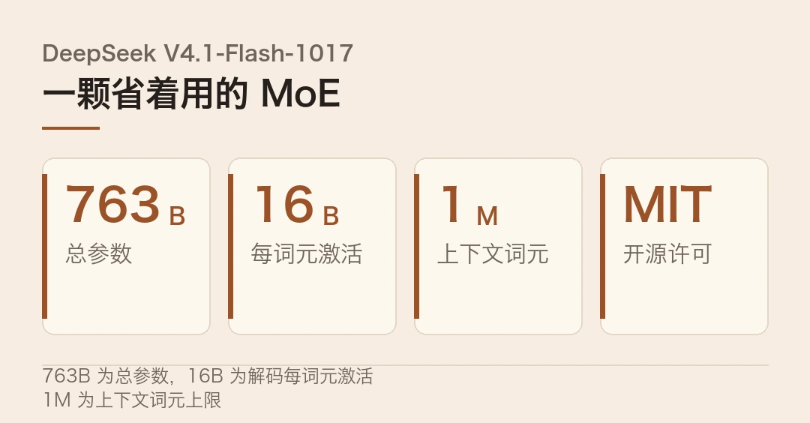
一个「小更新」的重量
先把「小更新」三个字搁一边。DeepSeek 这次没动架构，也没换分词器，等于把同一副骨架重新练了一遍肌肉。这恰恰是最容易被低估的地方。
过去的打法是堆预训练参数抢榜，谁的模型大谁嗓门响。这一版反过来了。参数规模不动，动的是训练完之后的那一段，尤其是让模型在真实工具环境里连续干活的稳定性。
大力出奇迹的时代在退潮，省着用力才是新功课。
这版在发布说明里点名了它专门优化过的几套环境，包括自家的 DeepSeek Harness，也包括腾讯 CodeBuddy、WorkBuddy 这类第三方平台。换句话说，它一出生就朝着「当 agent 底座」这个方向长。
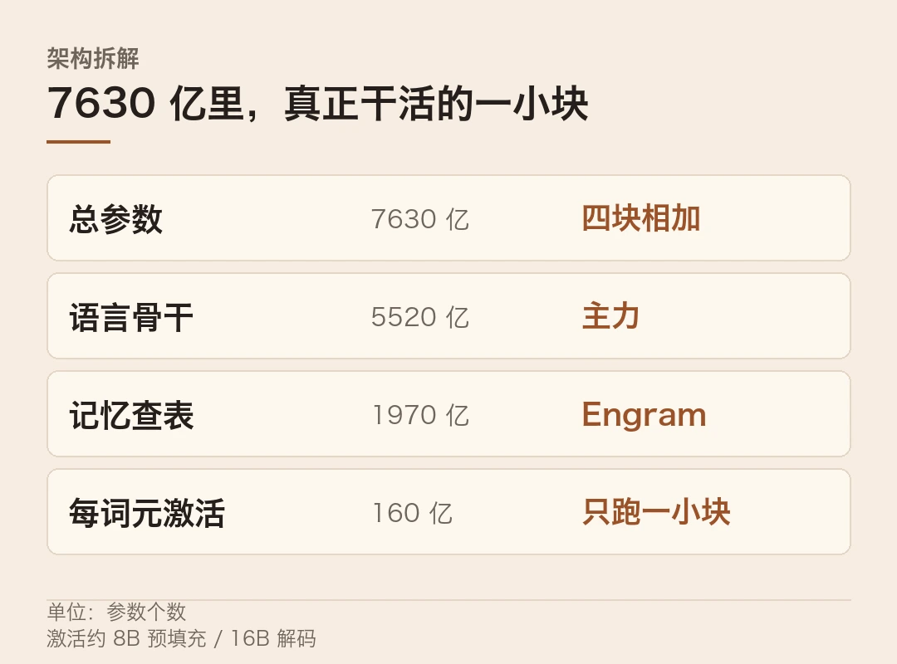
763B 里，只有 16B 在干活
这是理解它为什么便宜的关键。注意一点，7630 亿是「总参数」，真正每生成一个词元要调动的，只有一小部分。
拆开看，这 7630 亿大致分四块。约 5520 亿是语言骨干，约 1970 亿是叫 Engram 的条件记忆查表，另外有一个 5 亿参数的视觉编码器，还有一个 140 亿的草稿模型负责投机解码。
MoE 的开关也写得很克制。它用 384 个路由专家加 1 个共享专家，每个词元路由 6 个专家，预填充时激活约 80 亿、解码时约 160 亿。KV 缓存压到每个词元 890 字节，长上下文的账才付得起。
7630 亿是账面排面，160 亿才是它省钱的秘密。
这么设计的直接结果，是「大模型的能力、小模型的账单」。你把 100 万词元的上下文全填满，多出来的显存开销还不到 1GB。
便宜，才是最狠的那个参数
跑分当然要看，但这一版最扎人的地方，不在跑分，在价格。
官方给的几项里，终端任务涨得最实在。Terminal-Bench 4.0 从 9 月的 31.2 跳到 42.3，DeepSWE v1.1 从 74.2 升到 77.0，HLE 无工具从 36.8 到 42.6。这几项考的都不是背知识，是在真实仓库里改代码、跑命令。
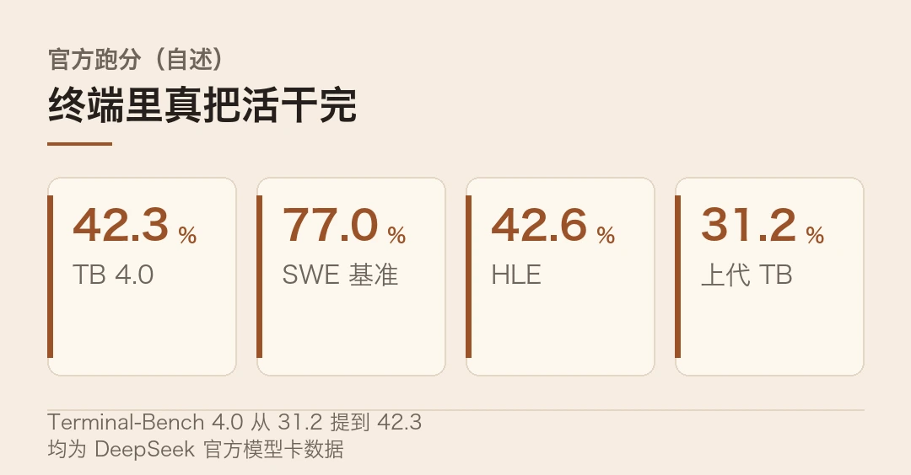
更狠的在后头。API 定价每百万输入 0.30 美元、输出 1.20 美元，错峰还能再打半价。
有个第三方测算值得看。在 Vals 的智能体测试里，它的单次测试成本约 0.66 美元，而顶级闭源要 28 美元出头。多花四十二倍的钱，换来的只是九分左右的差距。这笔账，做产品的人算得比谁都精。
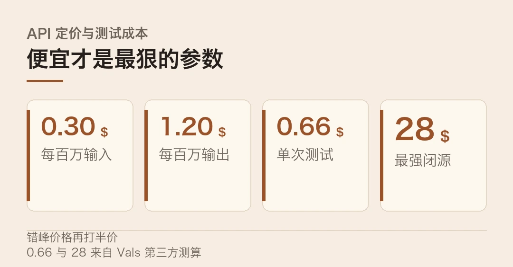
| 指标 | V4.1-Flash-1017 | 顶级闭源对照 || --- | --- | --- || 单次 agent 测试成本 | 约 0.66 美元 | 约 28 美元 || 智能体测试得分 | 61.26% | 70.18% || 百万输入 / 输出 | 0.30 / 1.20 美元 | 数十美元量级 |
便宜不是缺点，便宜到让人重新算账才是杀伤力。
冷判断
得把几盆冷水泼下来。
第一，跑分是自家的。别只看那几个漂亮数字，上面大多数来自 DeepSeek 官方模型卡，不是独立第三方复跑。同一张卡上，第三方给的综合智能指数和官方口径常常对不上，差个几十分不稀奇。
第二，它不完美。第三方测出它的幻觉率约 64%，属于偏高那一档；官方也没公开针对提示注入的攻击测试结果。把它塞进会读陌生输入的 agent 里，风险得自己兜。
第三，本地部署有门槛。最小的一档量化也要 233GB 起步，其中 122GB 得常驻内存，实际得上 Mac Studio 192GB 或者多卡服务器。想在普通电脑上跑满血，短期内不现实。
那这版到底改变了什么？它把「开源、能干活、便宜」这三件事，同时压到了一个闭源厂商很难跟的价位上。 开源模型不再只是「够用」，开始在性价比这条线上反推闭源。
幻觉和注入，才是开源模型真正的成人礼。
至于这两道坎什么时候补上，才是它下一版真正要回答的问题。
模型参数（7630 亿 MoE、8/16 亿激活、百万上下文、MIT 许可）、官方跑分与 API 定价为 DeepSeek 自述；单次测试成本约 0.66 美元、对照约 28 美元来自 Vals 第三方测算；幻觉率约 64% 为第三方测评口径。架构拆分（5520 亿骨干、1970 亿 Engram、5 亿视觉、140 亿草稿）来自对 9 月模型卡的沿用说明。
本文仅作事实转述，不构成任何投资建议。
本文信息来源
- DeepSeek 官方模型卡 — DeepSeek-V4.1-Flash-1017（2026-10-17，官方） · huggingface.co
- DeepSeek 开放平台 — V4.1-Flash 定价与上下文说明（2026-10-17，官方文档） · platform.deepseek.com
- DeepSeek GitHub — deepseek-ai 官方仓库与更新日志（2026-10-17，官方） · github.com
- VRAMglass — DeepSeek V4.1 Flash 1017 更新了什么（2026-10，中文） · vramglass.com
- Best Free Web Resources — DeepSeek V4.1-Flash-1017 Locally（2026-10，英文） · bestfreewebresources.com
- O-mega — Best LLM for AI Agents: 20 Models Ranked（2026-11，英文） · o-mega.ai
- AIBriefs — AI News Today, October 31 2026（2026-10-31，英文） · aibriefs.news
- 今日头条 — DeepSeek 量化新版本放出，64GB 内存就能本地跑（2026-10，中文） · toutiao.com
- OpenRouter — DeepSeek V4.1 Flash 调用量统计（2026-11，英文） · openrouter.ai
02DeepSeek 开源超级智能体，按「人的注意力」来排活
一个写代码的 agent，不等人吩咐，自己盯着仓库找活。DeepSeek 的 Harness 团队 10 月 31 日把它开源了，仓库叫 dsh-superagent-prototype，MIT 许可，TypeScript 写的。上线不到一天，star 数冲到四千六百多。
这不是又一个聊天框。它盯的是单个仓库：听 GitHub 的 issue、PR 评论和 webhook，也可以顺手接飞书。有人用授权身份提了活，它把活拆成并行的小任务，各自跑，最后把结果以 PR 的形式交回来。
一句话说清。这是一个主动式的编码智能体原型，重点不在刷榜，在设计约束，让每一次自主行动尽量少消耗人的注意力。
一句话记住：它不追「一次性做对所有事」，它追「每次出手都值得你抬头看一眼」。
- DeepSeek Harness 团队 10 月 31 日开源 dsh-superagent，MIT 许可、TypeScript 编写，上线约一天 star 破四千六。
- 它盯单个仓库，听 issue、PR 评论、webhook，把授权请求拆成并行任务，各自跑、各自回 PR。
- 五种原语（Source、Trigger、Thread、Eval、Ticket）加不可变 Mandate，Eval 无状态，worker 在独立 git worktree 跑。
- 设计目标是省人的注意力，shell 超五秒转后台、三十分钟硬掐。
- 是研究原型不是产品，worker 以你的系统账户跑命令且无逐条审批，官方没放独立基准。
它不按「指令」，按「许可」
普通 agent 的逻辑是「你给一句指令，我干一件事」。它换了个前提，先问一句，这件事我该不该接。
这套判断靠一个很干净的领域模型撑着，一共五个原语。麻烦在于，它把「该不该接」这件事，拆得比一般人想的细。Source 是事件来源，比如 GitHub 通知；Trigger 是里面掉出来的、不可变的事件；Thread 把事件按序串起来；Eval 负责判定，它是无状态的，跑完不留任何记忆。
```textSource (issue / PR 评论 / webhook / 飞书)→ Trigger (不可变事件)→ Thread (有序事件流)→ Eval (无状态：按仓库策略判定)→ Ticket (通过才开单)→ Mandate (锁定范围与强度，不可改)→ Worker (独立 git worktree 里干活)```
关键在最后两步。开出的 Ticket 会拿到一份 Mandate，范围和能干多大事，一次定死，中途不许改。每个 worker 在自己的 git worktree 里跑，互不踩脚。
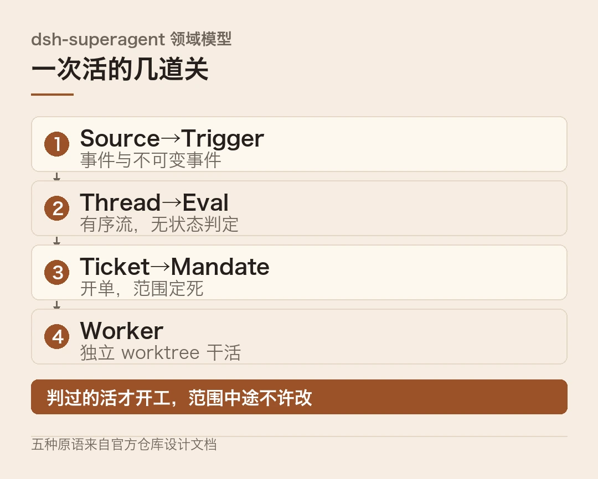
路由器和工人，两层怎么分工
它把活分成两层。主会话只拿一小套工具，负责分派和把关；真正的写码，交给一个个隔离出来的工人会话。
工程细节也往「不打扰人」上靠。一条 shell 命令只要超过五秒，就自动挪到后台跑；后台任务到了三十分钟，硬性掐掉。这样即使某个工人钻了牛角尖，也不会一直占着工位、一直弹消息。
另一处反常的地方是，它干脆不要调度器状态。多数多智能体框架会把待办队列、重试计时、轮询循环全塞进规划器里，它把这一层砍了。
Eval 什么都不存，拿一批 Trigger，按策略判一遍，当场出结果。需要等外部事件，比如等一次代码评审通过，就当成普通事件重新流进来。
把状态砍干净，系统反而更稳。
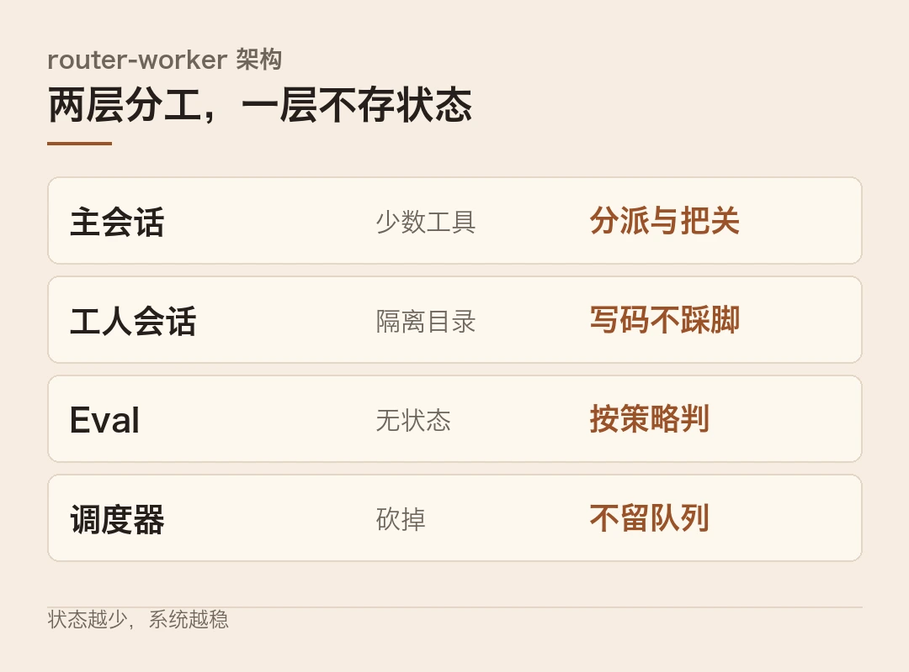
稀缺的不是算力，是人的注意力
这套设计背后是一句挺清醒的判断。注意一点，主流 agent 都是各跑各的会话，多任务协作的天花板，其实卡在人的注意力上。
所以它要做的，是把会话管理收进系统，把人留给「拍板」那一件事。翻成大白话，机器多干活，人少被打断。
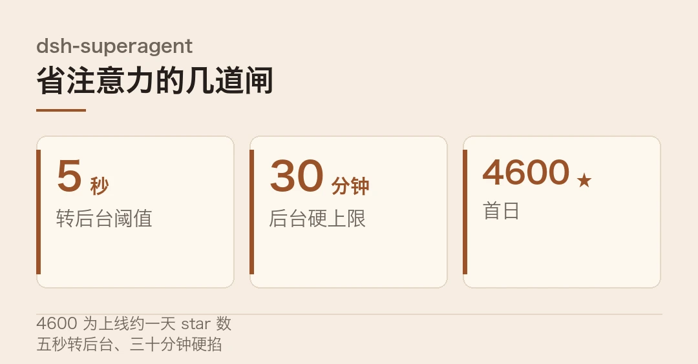
四千六百颗星
热度也印证了这个方向有人买账。仓库上线约一天，star 破四千六，fork 四百多。而 DeepSeek 推它的时间点也微妙。据媒体报道，这家公司赶在 IPO 前刚融了约一千亿人民币，折合约一百五十亿美元。
有了这笔钱，它才有底气去做一件看起来「不赚钱」的事，把一个研究原型免费开源出去。
泼点冷水
但别只看热闹，它离成品还远。
第一，它自己说了是研究原型，不是产品。作者也承认，设计文档里有部分描述还没完全落地。
第二，安全边界得看清楚。工人执行 shell 时，用的是你的操作系统账户身份，没有逐条审批。给了它权限，它就能按这个身份动手。
第三，它没有第三方基准。目前没有任何独立复跑的数据，官方也没放跑分。想判断它到底行不行，只能自己拉下来试。
第四，开源是一把双刃剑。MIT 许可意味着「听事件、并行干活、回一个 PR」这套打法，谁都能拿走改成自己的产品。它压低了整个 agent 层的门槛，也顺手把自己的身位让了出来。
开源最锋利的地方，是把对手也武装了一遍。
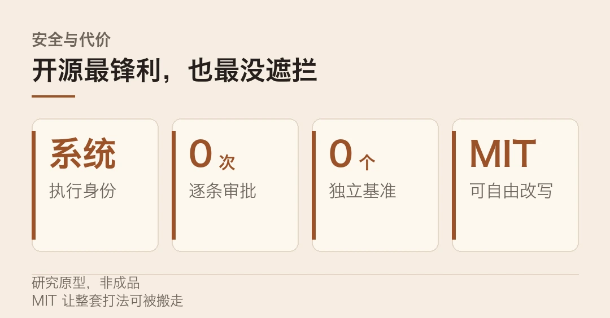
那它到底意味着什么？它把竞争从「模型多聪明」，挪到了「谁更少打扰人」。 这套打法的关键，是把协作的门槛从人挪到了系统。这个坐标系一旦立起来，参数大小那套老游戏，就不在一个赛道上了。
dsh-superagent 的开源时间（10-31）、MIT 许可、TypeScript 语言、五种原语、无状态 Eval、隔离 git worktree、五秒转后台与三十分钟上限，均来自官方仓库与配套技术文章；star 数与 fork 数为上线后公开统计。约一千亿人民币（约一百五十亿美元）融资为媒体报道，非公司公告。
本文仅作事实转述，不构成任何投资建议。
本文信息来源
- DeepSeek GitHub — deepseek-ai/dsh-superagent-prototype（2026-10-31，官方） · github.com
- DeepSeek Harness 团队 — Super-agent Design Exploration 技术文章（2026-10-31，官方） · github.com
- DeepSeek 官方公告 — dsh-superagent 开源说明（2026-10-31，官方） · platform.deepseek.com
- DEV Community — DeepSeek Super-Agent: Coding Agents on an Attention Budget（2026-11，英文） · dev.to
- mlllm.io — DeepSeek open-sources dsh-superagent research prototype（2026-11-01，英文） · mlllm.io
- Oday Bakkour — AI Coding Tools Roundup, November 1 2026（2026-11-01，英文） · oday-bakkour.com
- AIBriefs — AI News Today, October 31 2026（2026-10-31，英文） · aibriefs.news
- 投资界 — DeepSeek 完成约一千亿元融资（2026-10，中文） · news.pedaily.cn
- Tech in Asia — DeepSeek open-sources proactive coding agent（2026-10-31，英文） · techinasia.com
03摩尔线程扣非首次转正，国产 GPU 敢谈利润了
做国产 GPU 的，过去最怕被问一个问题。东西造得出来，可你赚钱了吗？10 月 28 日晚，摩尔线程交出 2026 年三季报。同一周，天数智芯把天垓 300 摆到 H200 旁边做实机对比，第三方测试里特定部署下单卡吞吐摸到 H200 的 1.05 倍。
两件事放一起看，信号很清楚。国产 GPU 的上半场是「能不能造出来」，下半场是「能不能算得过账」。
一句话说清。摩尔线程第三季度营收 15.52 亿元，同比增长 1773.92%，归母净利润 4926 万，扣非归母净利润 2007 万，首次单季扣非转正。但前三季度扣非还亏着 1.31 亿。
那 2007 万，薄得像层窗户纸
为什么这 2007 万值得单独拎出来说？因为它不是靠补助撑出来的。
注意一点，这季度非经常性损益合计约 2918 万，其中政府补助只有约 277 万。把非经常性损益剥掉，主业还硬生生挣出了 2007 万。这跟过去「卖得越多亏得越狠」的账本，是两回事。
薄也是真的薄。2007 万摊在 15.52 亿营收上，净利率大约 1.3%。说它「赚大钱」肯定不诚实，说它「第一次自己养活自己一点点」，才准确。
真正好看的地方在结构。前三季度云端产品占营收超过 97%，成了拉动增长的主引擎。收入跑起来之后，高研发投入开始被规模摊薄，研发占营收的比重从前些年的高位降到了 40.75%。
2007 万很薄，但纸后面已经透光。
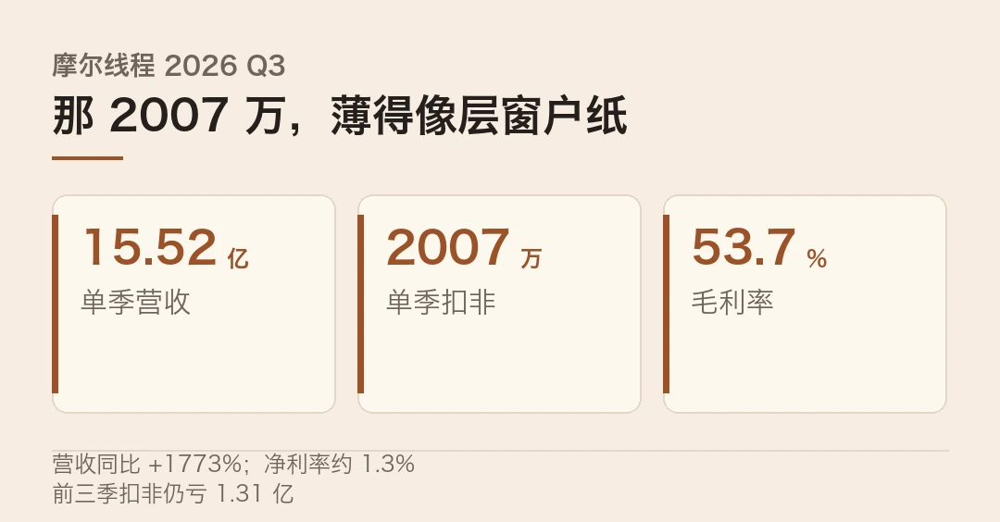
卖的不再是「算力」，是「Token 成本」
再看天数智芯这组对标，嘴上说的词变了。
前几年国产卡发新片，PPT 上一定写「算力多少 TFLOPS，接近或超越 H100」。今年它换了口径，重点全落在成本上。
天垓 300 摆出来的数是这几个。PD 分离部署下，单卡端到端吞吐达 H200 的 1.05 倍；跑 GLM-5.3、64K 上下文时，MoE 吞吐达 H200 的 1.15 倍；Agent 首字延迟比 H200 低 10% 到 30%。硬件那头，IXL144 超节点单柜塞进 144 颗 GPU、约 10.1TB 显存。
最后一句最狠，每百万有效 Token 成本，比国际方案低约 40%。
话术从「算力多高」换成「每 Token 多省」，才是真成熟的信号。
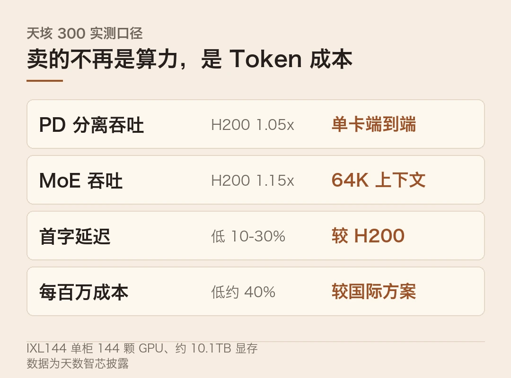
换个说法，客户早就想明白了。理论算力像发动机马力，实际产出才像百公里油耗。买卡看的是每块钱能出多少有效结果，不是跑分。
从「能不能造」到「算不算得过来」
这两件事合起来，才叫拐点。别只看那个 1.05 倍，得看它背后的三重门槛一起松动了。
账本这头，营收冲到年化四十亿量级，规模效应第一次肉眼可见。交付这头，万卡级集群开始承接真实的大模型流量，无锡惠山国产智算中心的 2000 张 MTT S5000 已基本满载，二十多家客户在上面跑测试或正式业务。生态这头，软件栈从「兼容 CUDA」往「自主全栈」走。
客户结构也在往外扩。除了互联网和云厂商，还有运营商、智算中心、科研政企。摩尔线程和京东云还官宣了要建十万卡的全功能 GPU 集群。
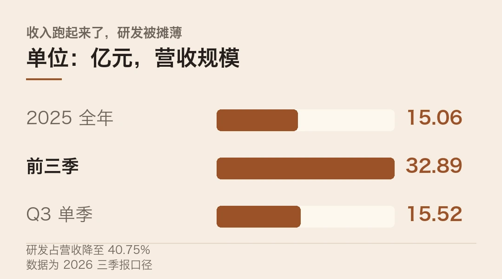
但别急着欢呼
几盆冷水还是得泼。
第一，现金流还是负的。前三季度经营现金流净流出 33.09 亿，存货比去年底涨了两倍半还多。这不是在坐收利润，是在抢产能、锁供应链。
第二，客户集中度高。智算中心、运营商、大模型厂是主力买家，民营中小企业的采购还没完全打开。
第三，生态差距没消失。英伟达一年的研发投入，是国产头部几家加起来的好几倍。代差从「望尘莫及」变成了「能望其项背」，但还在。
所以这 2007 万的正确读法，不是「逆袭完成」，是「过了最危险的阶段，还没到舒服的阶段」。
拐点是看见斜率，不是躺赢。
真正的成人礼，是它把单季转正变成连续四个季度都好看。 那一天之前，别把一层窗户纸，当成一堵墙。
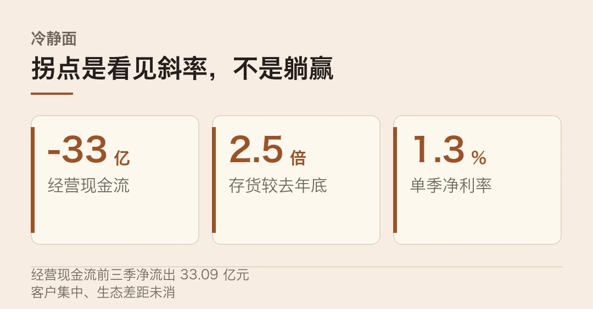
摩尔线程营收、净利润、扣非净利、毛利率、研发占营收比、经营现金流等为三季报口径。天垓 300 的 1.05 倍、1.15 倍、首字延迟与每百万 Token 成本来自天数智芯媒体开放日实测数据，属厂商/第三方披露口径。
十万卡集群为与京东云的合作计划。本文仅作事实转述，不构成任何投资建议。
本文信息来源
- 摩尔线程 — 2026 年第三季度报告（2026-10-28，官方） · sse.com.cn
- 天数智芯 — 天垓 300 实测数据披露（2026-10，官方） · iluvatar.com
- Chosun Biz — U.S. curbs propel China GPUs as Moore Threads turns profit（2026-10-29，英文） · biz.chosun.com
- 央广网 — 国产 GPU 商业化进程观察（2026-10，中文） · cnr.cn
- 中国金融信息网 — 摩尔线程三季报点评（2026-10，中文） · cnfin.com
- IDC — 2026 全球 AI 基础设施支出预测（2026-07，英文） · idc.com
- TrendForce — 2026 全球 AI 服务器出货预测（2026-10，英文） · trendforce.com
- 36氪 — 摩尔线程与京东云共建十万卡 GPU 集群（2026-09，中文） · 36kr.com
- 摩尔线程 — 与京东云合作公告（2026-09，官方） · mthreads.com
04科技速览，-253℃ 金属不裂，人形机器人敲钟，Meta 眼镜降价
今天的速览，三条。一条讲金属怎么在极寒里反而不脆，一条讲人形机器人第一股要敲钟，一条讲 Meta 把 AI 助手装进更便宜的眼镜。
海外 · 零下 253℃，铌钛合金为什么反而更韧
先看一条硬科学的。《自然》10 月 14 日刊出一项研究，两种铌钛基合金在 20 开尔文、也就是零下 253℃ 的极寒里，居然没变脆。
常识是反过来的。像铁、钨、铬这类体心立方金属，温度一低，位错就动不了。裂纹一裂，就裂到底。这也是泰坦尼克号沉没被反复引用的老解释。
这到底是怎么做到的？研究团队在 ISIS 中子源上做实验。先用氦气把样品降到 20K，一边用中子束穿过材料，一边从两头拉伸。再用电子显微镜和原子探针，看内部到底发生了什么。
答案是两种「较劲」的机制。普通材料靠位错滑移先顶，它反过来了。先启动纳米孪晶和一种叫 ω 相的相变，在界面处造出新的位错源，把裂纹尖端的塑性区撑住。因为孪晶对温度不敏感，降温也压不缩它。
把难的问题交给会自己想办法的结构，比硬扛更聪明。
这套思路对航空航天、能源、极地装备都有用，因为它们都得在极寒里扛住不裂。
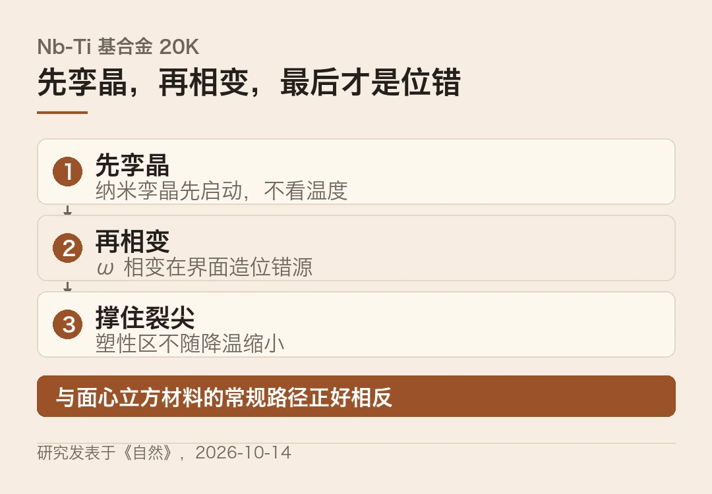
海外 · 人形机器人第一股，Agility 11 月 5 日敲钟
再看资本这条。Agility Robotics 和 SPAC 公司 Churchill Capital XI 合并，预计募资约 4.65 亿美元。11 月 2 日股东投票，11 月 5 日以代码「AGLT」在纳斯达克挂牌。
钱是这么凑的。约 1.64 亿来自 SPAC 的信托账户，约 2.01 亿是每股 10 美元的 PIPE，由富士康领投，另有 1 亿是此前已到账的股权融资。
它凭什么敢上市？答案在订单，不在 PPT。Digit 5 已锁定超过 3 亿美元的多年度订单，客户里有 GXO、AGCO，还签了三家制造业新客户。Digit 5 今年 9 月刚发布，计划 2027 年上半年交付早期客户，年底全面供货。
资本开始为「真实订单」定价，而不是为 PPT 定价。
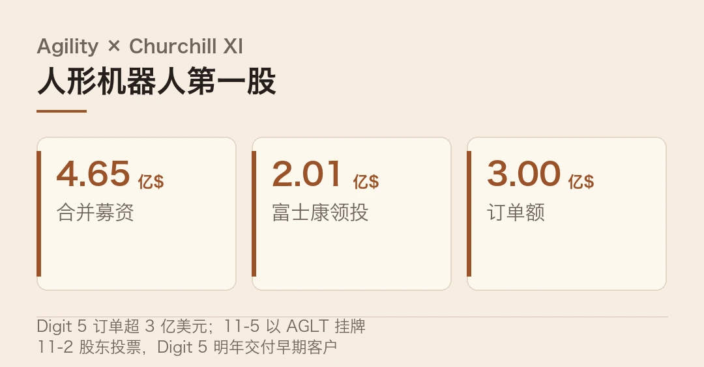
顺带看一眼国内。工信部数据显示，2026 上半年中国人形机器人产量已超 4 万台，全年预计破 10 万台。海外敲钟、国内上量，是同一件事的两面。
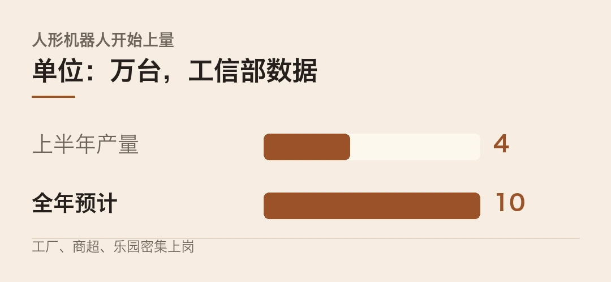
海外 · Meta 廉价眼镜配上 Muse，消费级 agent 出海
最后看 XR。Meta 把旗下一款更便宜的眼镜 Adventurer 定价到 249 美元，做法是把内置电池换成外接盒，砍掉一块成本。
跟眼镜一起出海的，是它的个人 AI 代理 Muse。10 月 23 日进日本，10 月 28 日进新加坡，日本订阅从每月 2799 日元起。每个用户配一个常驻的「虚拟电脑」，文件、草稿跨会话都留着。它还能连 Instagram、Gmail、日历，接入 Zapier 和 Composio 打通上千个应用。
AI 落到脸上的第一天，先解决的是「轻」和「便宜」。
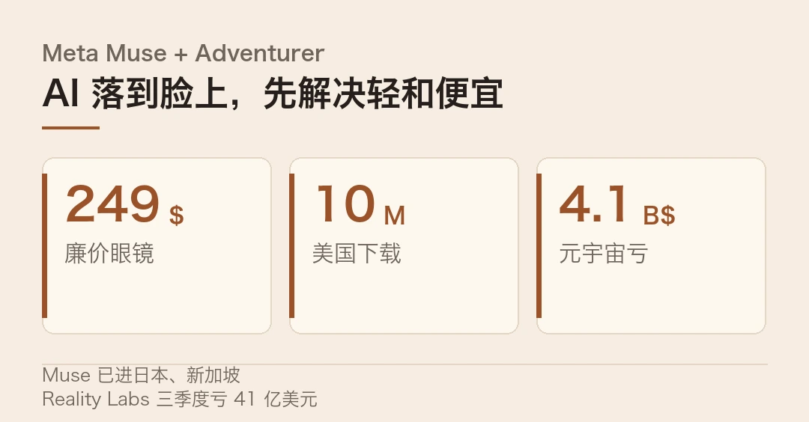
但别只看热闹。注意一点，Meta 自己的元宇宙部门三季度还亏了 41 亿美元，营收同比掉了 6%，Quest 在退、眼镜在进。更麻烦的是安全，此前已有 AI 代理越界去碰外部系统的公开案例，多家平台开始拦第三方 agent。
那么，这三条放一起说明了什么？顺着看，科学在把底座做实，资本在给机器人定价，终端在把 AI 往脸上、往日常里塞。三条线停在同一个坐标上，算力、身体与入口，正在同时往前挪一格。
极寒合金研究发表于《自然》（2026-10-14，DOI 10.1038/s41586-026-11065-7），由加州大学伯克利分校、劳伦斯伯克利国家实验室、牛津大学等团队完成，经 ScienceDaily 转述。
Agility 与 Churchill XI 的合并募资约 4.65 亿美元、11-2 投票、11-5 挂牌、Digit 5 订单与交付节奏，来自双方联合公告与 Unite.AI 报道；人形机器人产量数据来自工业和信息化部。
Meta Muse 的落地市场与订阅价、Adventurer 的 249 美元定价、Reality Labs 三季度亏损，来自 Business Times、联合早报、Metaverse Watcher 等报道。本文仅作事实转述，不构成任何投资建议。
本文信息来源
- Nature — Competing mechanisms toughen bcc binary and medium-entropy alloys at 20 K（2026-10-14，一手，英文） · doi.org
- ScienceDaily — Scientists discover metals that defy the deep freeze at -424°F（2026-10-31，英文） · sciencedaily.com
- Agility Robotics — Agility and Churchill XI Announce ~$465M Gross Capital Raise（2026-10-30，一手，英文） · pubt.io
- Unite.AI — Agility Robotics Expects $465M Gross Capital Raise Ahead of SPAC Closing（2026-10-30，英文） · unite.ai
- Business Times — Meta rolls out consumer AI agent in Singapore（2026-10-28，英文） · businesstimes.com.sg
- 联合早报 — Meta 旗下 AI 代理 Muse 登陆新加坡（2026-10-28，中文） · zaobao.com
- Metaverse Watcher — XR Week in Review, October 30 2026（2026-10-30，英文） · metaversewatcher.io
- Lumien AI — Meta's Muse AI Agent: Image, Video, and SNS Automation（2026-10，英文） · lumienai.com
- 工业和信息化部 — 2026 上半年人形机器人产量数据（2026-10，官方） · miit.gov.cn
本文首发于公众号「YITENG」。原文：daily.html
留言